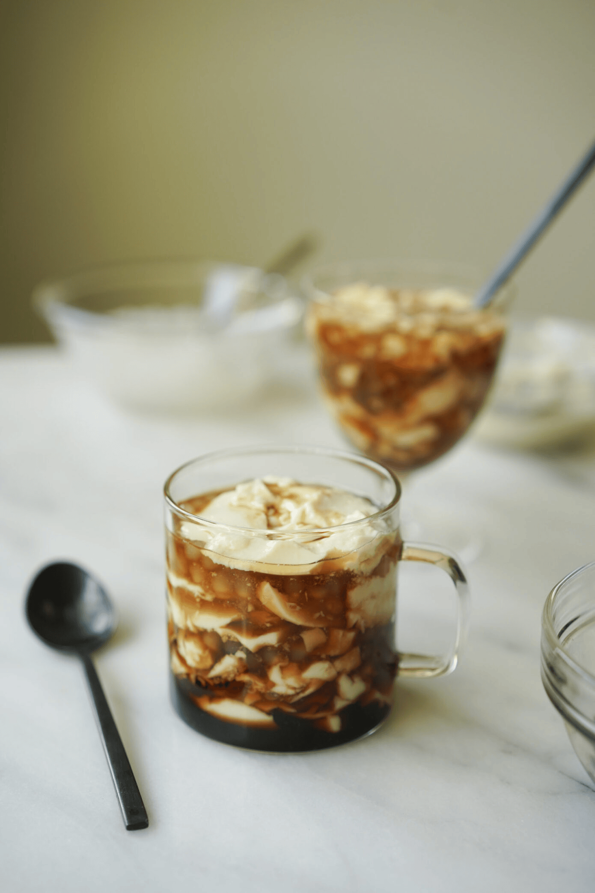

Taho Recipe

Making taho in the comfort of your home is easy, at least for the pudding part. Simply purchase soft silken tofu from the supermarket and you are halfway done.
The next steps are to make the syrup and cook sago. Making the brown arnibal is just like making a simple syrup. Combine 1 part of water to 2 parts brown sugar. Let it boil and stir until well blended. You may also add vanilla extract if desired.
The last step is to assemble everything together. Put some soft silken tofu on a mug. Microwave for a minute. Top with arnibal and sago pearls.
Ingredients
- 22 ounces soft silken tofu
- 3/4 cup sago pearls
- 4 1/2 cups water
- 3/4 cup brown sugar
- 3/4 cup water
- 1 teaspoon vanilla extract
Directions
- Pour 5 cups of water in a cooking pot and bring to a boil.
- Add the sago pearls. Boil for 3 to 6 minutes. Reduce the heat to low setting, continue boiling for 5 to 10 minutes.
- Drain the hot water by filtering the sago using a kitchen strainer. Put the sago pearls in a bowl with warm water and let it stay until needed
- Make the arnibal by boiling 3/4 cup water in a saucepan. Add the brown sugar. Stir. Add the vanilla extract. Turn the heat off. Set aside.
- Transfer the extra soft tofu in a bowl. Microwave it for 2 1/2 minutes
- Arrange the soft tofu in individual cups. Top with sago pearls and pour arnibal (syrup) on top. Serve warm. Share and Enjoy
Back to Main Page